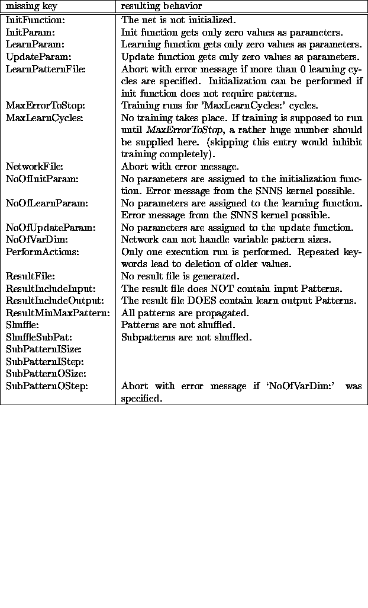
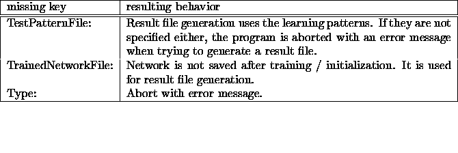

snnsbat may be called interactively or in batch mode. It was designed, however, to be called in batch mode. On Unix machines, the command `at' should be used, to allow logging the program with the mailbox. However, `at' can only read from standard input, so a combination of `echo' and `pipe' has to be used.
Three short examples for Unix are given here, to clarify the calls:
unix>echo 'snnsbat mybatch.cfg mybatch.log'
at 21:00 Friday
starts snnsbat next Friday at 9pm with the parameters given in mybatch.cfg and writes the output to the file mybatch.log in the current directory.
unix>echo 'snnsbat SNNSconfig1.cfg SNNSlog1.log'
at 22
starts snnsbat today at 10pm
unix>echo 'snnsbat' at now + 2 hours
starts snnsbat in 2 hours and uses the default files snnsbat.cfg and snnsbat.log
The executable is located in the directory
`.../SNNSv4.1/kernel/bin/<machine_type>/'.
The sources of snnsbat can be found in the directory
`.../SNNSv4.1/kernel/sources/'.
An example configuration file was
placed in `.../SNNSv4.0/examples'.